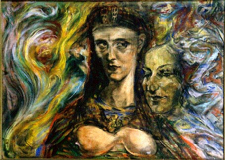

 "Aida" by Austin Osman Spare is a rather large (30W x 20H) pastel on board picture. Executed in 1954 this piece represents an excellent example of the artist's "automatic" drawing.
The head and torso of an enigmatic woman of regal bearing and wearing an egyptian headdress, (Ureas), dominates the center of the composition. She peers haughtily to her left, breasts bared at the lower edge of the depiction, illuminated from below by a dim, reddish light. Aida's line of sightseems to be directed at a weird facial image emerging from the chaotic field to her left and front. To her right background, unformed shapes swirl mindlessly upward.
Despite the seeming lack of of distinct focal points, this artwork possesses a strong sense of depth, arising from the forceful presentation of the queen, her position relative to the formlessness to he right, and to the emergent visage to her left front. The unformed void area is distinctly behind; the chaos field and face are distinctly forward. The contrast between the drisply drawn features of Aida and the wild vagueness within which she is surrounded further accentuates the visual depth of this work.
Remember -- A.O. Spare was a gifted draughtsman, with formal training including the Royal College of Art. His technical ability cannot be disputed.
Inasmuch as artistic efforts may be manifestations of True Will, visual artworks are magickal works. A.O. Spare's skill as an artist has found some critical acceptance, less so, his abilities as a sorceror. Now, AOS's occult skills are once again being understood, and with this understanding, his magick is becoming re-known. Spare's art has been characterized as of magical inspiration, and in some cases of being intrinsically magickal. Not all works have a full measure of both -- intuition strongly suggests that Aida does.
When viewing the picture, the question: "Who is she?" lurches to the forefront. AOS drew for himself, and as the agent of those beings to whom he was receptive. What then of Aida? A temporal door? An invitation? The opportunity to experience the Spareian vision, or the vision of Aida...?
By accout, AOS often relied upon middle aged men or older prostitutes for his models, yet in Aida, he imbued his his subject with beauty, power, and majesty: This may be a woman who has experienced the world, but in doing so clearly has not lost her authority or her destiny. She appears as the Empress, or perhaps the High Priestess...?
Wherein lies the source of her power? To what end has this force been imparted to her? By what means?
This drawing is a magical icon. An entity evoked by the artist, Aida has been made corporeal within the visual spectrum by Spare's application of color upon the board.
Art may be more powerful than words. In his "Focus of Life", AOS states: "Art is the truth we have realized of our belief." Assuming that he was referring to his artwork, this seems to validate the speculation offered by Jaques Rigaut/Genesis P. Orridge in the essay "Virtual Mirrors in Soud T.I.M.E.":
"All his writings are symbolic, they were never intended to be taken literally... They are appendices to the REAL work... His drawings, paintings, and images... They are in fact, the essence of his sorcery."
Upon viewing "Aida", her characterization of visual formula becomes reified -- Effecting some depths of mind, she becomes an access point to "otherwhere". Her moment, encompassing her existence, manifests her creation and her destruction; her coming from and going to, hence opens as a portal to her All. This drawing is Magick. To again cite "Virtual Mirrors":
"Spare's pictures can hold the entirety of the images and entities that he represents... They are there."
What character the name "Aida" may have been assigned to is irrelevant to experienceing this picture; as ntoed the woman depicted is queenly, yet also priestess-like. Whether she is an Empress or the Hierophanta may be a subjective determination. An exploration of her charms and wonders promises to be lengthy.
What remains immediate and apparent, is that this picture has magickal attributes, and that these energies are potent enough that discussing them does not diminish them. As in another quote:
"Such drawings are themselves the gateway to the Sabbath; one is drawn into a vortex and whirled down the funnel of consciousness which explodes into unknown worlds."
This then, is "Aida", who at the very least, leaves us with an apprehension of A.O. Spare's Sorcery.
--Vinzent Pronova